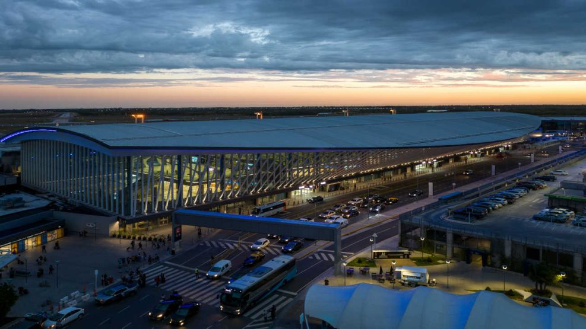
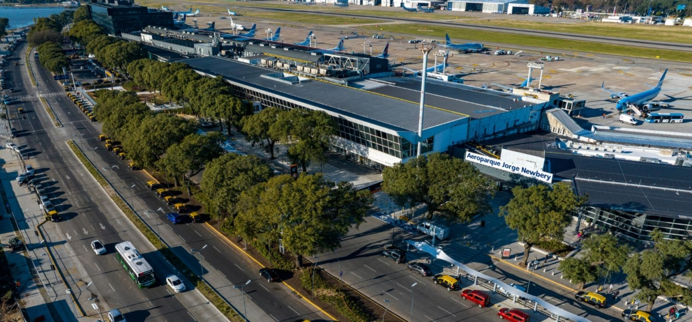
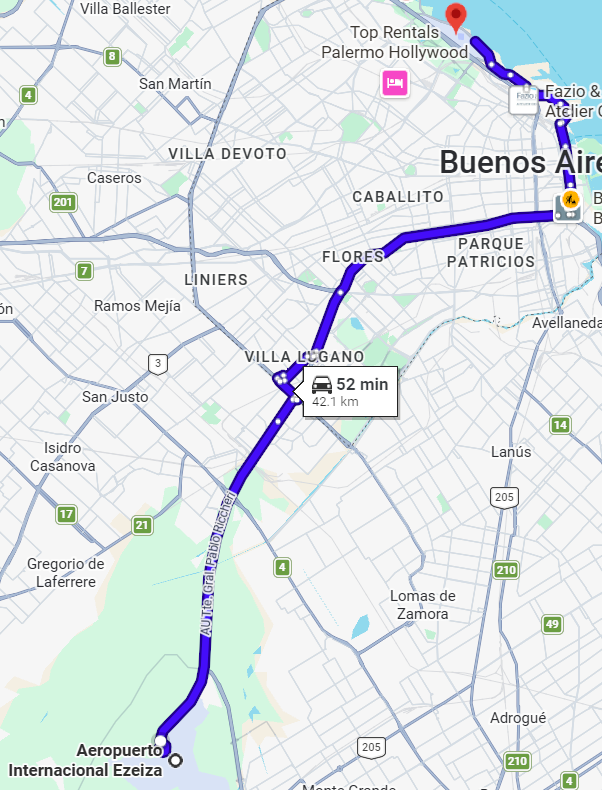
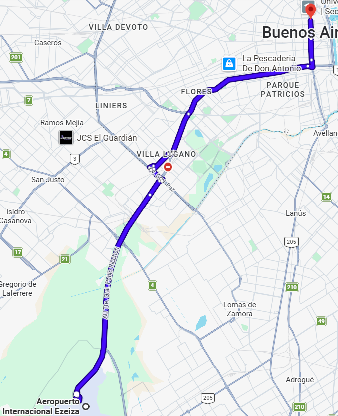

Información del Servicio
Tienda León es uno de los principales servicios ejecutivos de transporte aeroportuario de Buenos Aires. El servicio conecta el Aeropuerto Internacional de Ezeiza con Aeroparque y Terminal Pellegrini mediante unidades cómodas, modernas y equipadas para pasajeros nacionales e internacionales.
Todos los recorridos son directos, sin paradas intermedias.
Los principales destinos del servicio son:
- Aeropuerto Jorge Newbery (Aeroparque)
- Terminal Pellegrini - Ciudad de Buenos Aires
Tecnología a Bordo
- Wi-Fi durante el viaje.
- Seguimiento satelital en tiempo real.
- Tecnología de asistencia a la conducción (ADAS).
Seguridad
- Centro de operaciones y logística 24/7.
- Sistema de telemetría para gestión de flota.
- Departamento de Seguridad Vial.
Comfort
La flota está compuesta por unidades modernas, renovadas y diseñadas para brindar mayor comodidad durante el viaje.
Terminales y Destinos

Aeropuerto Internacional Ezeiza
Punto principal de salida del servicio ejecutivo. El embarque se realiza en la terminal de arribos del aeropuerto.
Ubicacion:
AU Tte. Gral. Pablo Riccheri Km 33,5, B1802 Ezeiza, Provincia de Buenos Aires, Argentina
Aeroparque Jorge Newbery
Destino directo para pasajeros con conexiones nacionales dentro de la Ciudad de Buenos Aires.
Ubicacion:
Av. Costanera Rafael Obligado s/n, C1425 Cdad. Autónoma de Buenos Aires, ArgentinaTerminal Pellegrini
Terminal ubicada en el centro porteño con conexión rápida a subtes, taxis y hoteles de la ciudad.
Ubicacion:
Carlos Pellegrini 971, C1076 Cdad. Autónoma de Buenos Aires, ArgentinaMapas y Recorridos
Ezeiza → Aeroparque
Recorrido directo por autopista entre el Aeropuerto Internacional de Ezeiza y Aeroparque Jorge Newbery.
Tiempo de viaje: 1 hora 20 minutos

Ezeiza → Terminal Pellegrini
Servicio directo hacia el centro de la Ciudad de Buenos Aires mediante Autopista Riccheri.
Tiempo de viaje: 1 hora

Horarios del Servicio
| Horario | Frecuencia |
|---|---|
| 04:00 - 00:00 (Todos los dias) | Cada 1 hora |
Recomendación: Los pasajeros deberán presentarse 15 minutos antes de la salida seleccionada para realizar el embarque con normalidad.
Tarifas
Unidades con capacidad para 45 pasajeros, diseñadas para brindar un traslado cómodo y eficiente entre el Aeropuerto Internacional de Ezeiza, Aeroparque y la Terminal Pellegrini.
Ofrecen mayor espacio para pasajeros y equipaje, adaptándose tanto a viajeros individuales como a grupos que necesitan realizar sus conexiones aeroportuarias con comodidad.
Ezeiza → Aeroparque
Precio: $16.000 por persona
Tiempo estimado: 1h 20min
Incluye 1 valija de hasta 23kg y 1 bolso de mano.
Ezeiza → Terminal Pellegrini
Precio: $15.500 por persona
Tiempo estimado: 1 hora
Incluye 1 valija de hasta 23kg y 1 bolso de mano.
Características de Accesibilidad
Movilidad Reducida
Las unidades adaptadas cuentan con rampas y elevadores para facilitar el ascenso y descenso de pasajeros en silla de ruedas. Además, disponen de espacios específicos con sistemas de sujeción y seguridad.
Asistencia durante el viaje
El personal de la empresa está capacitado para brindar asistencia al momento de subir y bajar del vehículo, además de colaborar con el manejo del equipaje cuando sea necesario.
Terminales Accesibles
Las principales terminales del servicio cuentan con espacios amplios, zonas de espera y accesos adaptados. En Ezeiza y Aeroparque las paradas se encuentran a pocos metros de las puertas de arribos.
Mascotas y Asistencia Especial
Los pasajeros con certificado de mascota de apoyo emocional o perro guía pueden acceder al servicio según las políticas de la empresa. Las mascotas convencionales deben viajar en canil dentro de la bodega.
Canales de Atención
La empresa ofrece atención personalizada mediante canales como WhatsApp, Telegram, formulario web y atención presencial en terminales y aeropuertos.
Información para Pasajeros
Equipaje
Cada pasajero puede transportar una valija de hasta 23 kg y un carry-on o bolso de mano. Para otro tipo de equipaje se recomienda consultar previamente.
Reservas y Cambios
Los pasajes pueden adquirirse previamente y, para realizar cancelaciones o modificaciones, es necesario comunicarse con el centro de atención al cliente con anticipación.
Medios de Pago
Se aceptan tarjetas de débito y crédito, Mercado Pago, pesos argentinos y moneda extranjera.